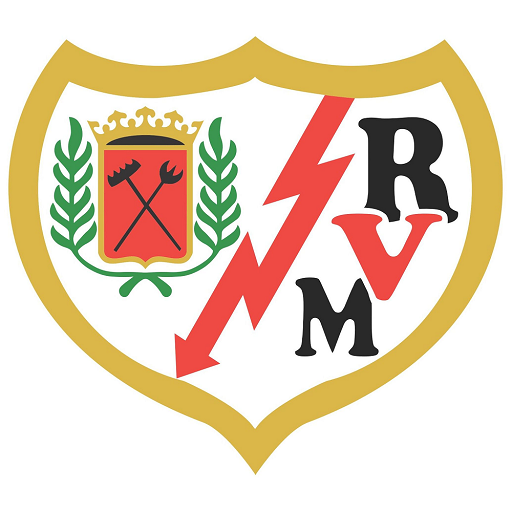
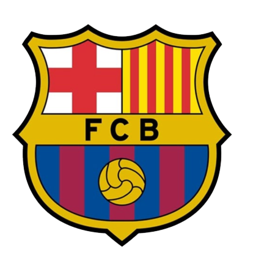
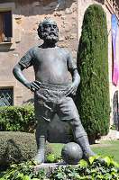

Райо Вальекано   Барселона 27.10
«Невозможно не любить Куна», - написал в Твиттере известный репортер Гиллем Балаге, прикрепив скрытые кадры Серхио Агуэро во время Эль-Класико.
Видео можно посмотреть
здесь.
«У Ансу были болевые ощущения во время матча с «Мадридом», они не связаны с его прошлой травмой», - отметил Роналд Куман во время пресс-конференции перед матчем с «Райо».
«Пока появление Ансу на поле под вопросом».
Фати покинул поле во 2-м тайме матча с «Мадридом».
ФК "Барселона" смогла выручить около 4,5 миллиона евро от продажи билетов на Класико.
Футбольный клуб "Барселона" - испанский профессиональный футбольный клуб из одноимённого города. Основан в 1899 году группой швейцарских, британских, испанских и каталонских футболистов во главе с Жоаном Гампером. Клуб стал одним из символов Каталонии, отсюда происходит и девиз — Més que un club — «Больше, чем клуб». Фанаты "Барсы" также известны как «culés» (кулес).
 Основной стадион клуба — «Камп Ноу», самый вместительный стадион в Европе.
Дедушка Барселоны — персонаж, созданный художником Валенти Кастаньс и символизирующий собой футбольный клуб «Барселона». Он традиционно облачён в стиль 1960—1970-х годов, в руках у него флаг каталонского клуба, а на голове — барретина. В честь этого персонажа установлена скульптура возле Ла Масии, рядом с «Камп Ноу». Впервые этот персонаж появился 29 октября 1924 года на страницах журнала El xut.
С 1998 года производителем формы для клуба является компания Nike.
Гимн ФК Барселона:
Клип: